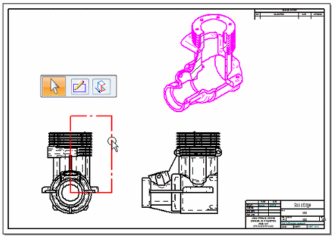
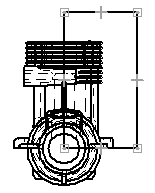
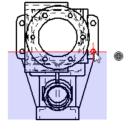

Modify a broken-out section view
You can modify a broken-out section view by selecting the profile used to create it.

-
Right-click the drawing view that shows the broken-out section and choose Properties.
-
On the General tab in the Drawing View Properties dialog box, select the Show Broken-Out Section view profiles check box.
-
Click the profile that was used to create the broken-out section view.
-
Do one of the following to modify the broken-out section view:
To do this
Do the following
Change the shape or size of the profile.
-
On the command bar, click Modify Profile.
-
Drag the handles to change the profile shape, or delete individual lines and redraw the shape, ensuring the end points are connected.

-
When you are done, click the Close Broken Out Section button on the ribbon.
Change the depth of geometry that is removed by the broken-out section.
-
On the command bar, click Modify Depth.
The current clipping plane location is displayed on the view where it was defined. If it was defined associatively, the connect relationship indicator also is shown.
-
In a drawing view that is orthogonal to the view where the profile is drawn, click a different keypoint (such as a center point, end point, or midpoint) or a centerline.

Tip:To define a non-associative extent depth, you can press Shift before you click.
-
On the command bar, click Accept.
Remove a broken-out section.
-
Select the broken-out section profile.
-
Press the Delete key.
-
-
Update the broken-out section view to show the changes.
How do I
Create a broken-out section viewCreate a broken view
Break an isometric view with a break axis
Connect a break line at a distance
Display break lines and cropped edges in a broken view
Modify break lines in a broken view
Copy break lines between drawing views
Remove inherited break lines
Learn more
Broken viewsLook up more details
Broken-Out commandBroken View command
Broken View command bar
Inherit Break Lines command
Remove Break Line Inheritance command